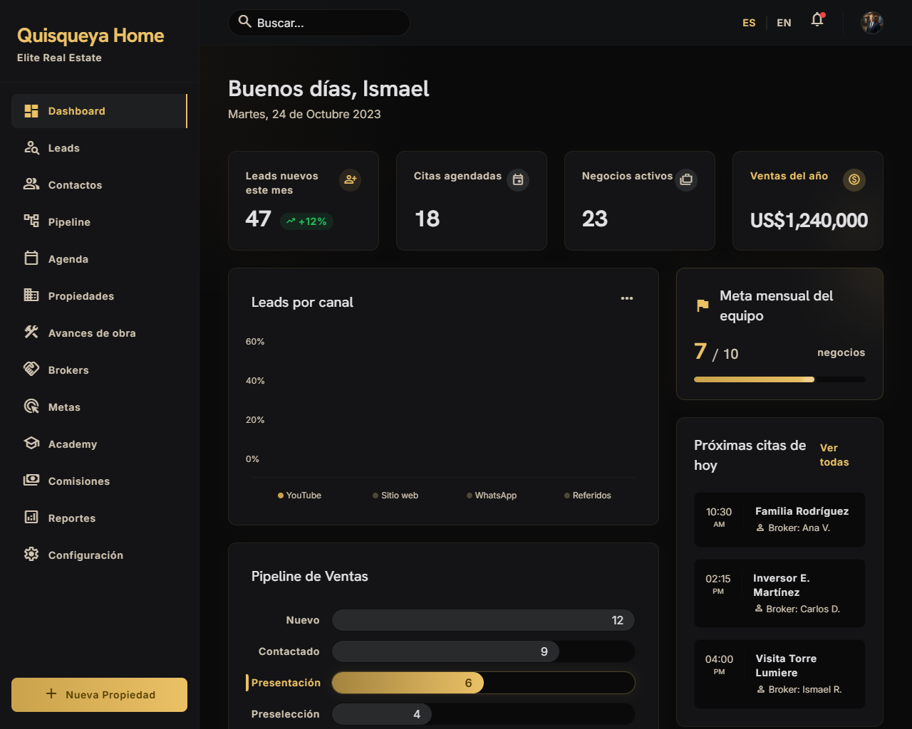
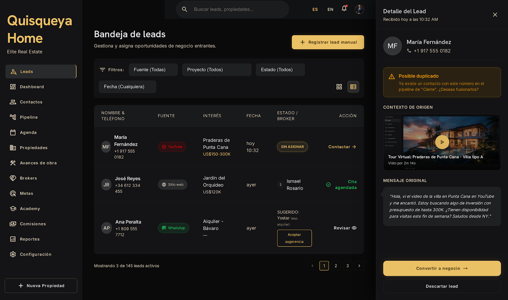
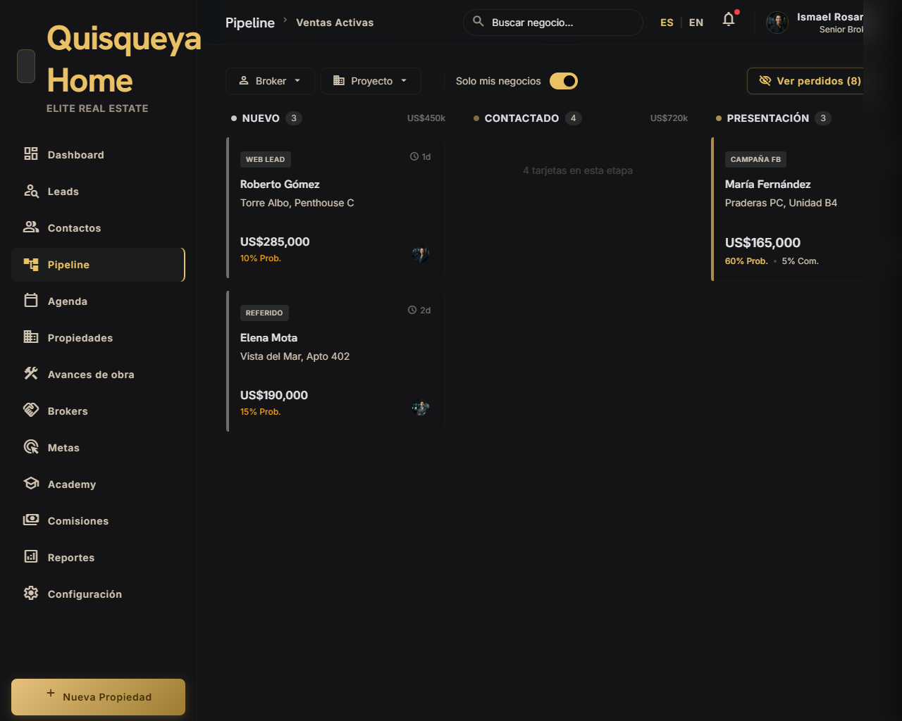
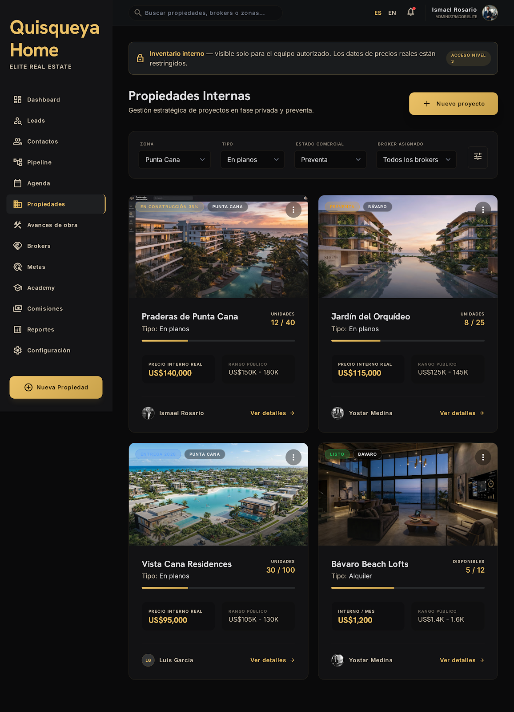
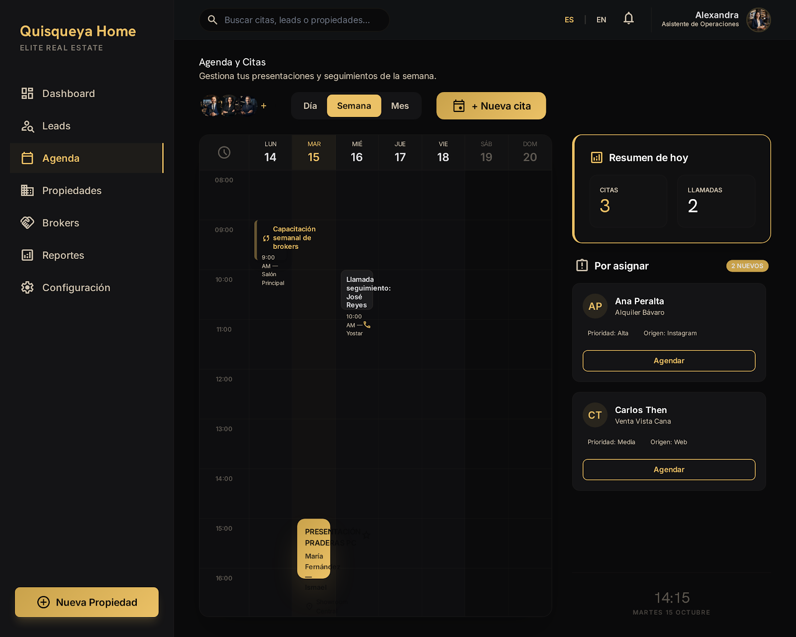
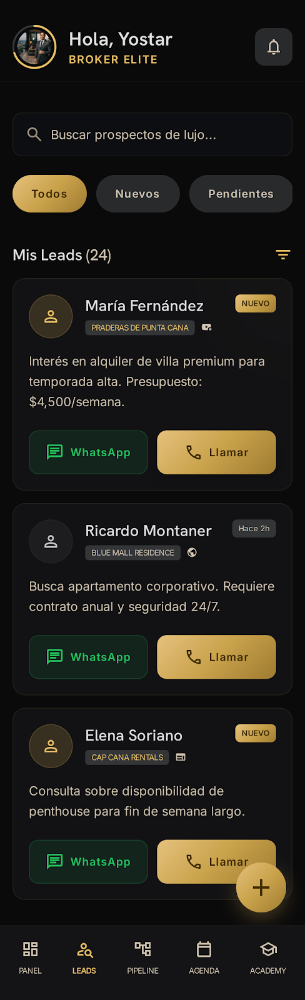

Preparación del CRM
Catálogo vigente, arquitectura, capa visual y acceso al CRM de desarrollo en la VPS.
Primer recorrido propuesto
Consulta del portal → Lead → responsable → seguimiento → visita.
Consultar documento maestroLos 22 módulos
Orden de la carpeta Central de Drive. Cada ficha enlaza con el análisis anterior.
22 módulos
Inicio
Mi día, tareas/SLA, widgets QH, métricas filtradas y enlaces operativos
Análisis INILeads
captación multicanal, deduplicación de ingreso, calificación, asignación/reasignación y conversión
Análisis LEANegocios
etapas/transiciones, atribución, propiedad/unidad, cierre coordinado, pérdida/reapertura
Análisis NEGContactos
ficha, relación/historial, teléfonos, consentimiento/bajas, merge controlado y derechos
Análisis CONPropiedades
proyectos/unidades/precios, stock efectivo, compromisos, fases/fotos, publicación por canal
Análisis INVAgenda
citas/visitas, calendario y lista, Google opcional, ICS, choques y resultados
Análisis AGETareas
asignación, packs, vencimiento/evidencia, actividades y vínculo con lead/negocio
Análisis TARComunicaciones
plantillas/canales, preparación/envío y auditoría; bandeja/campañas/historial objetivo
Análisis COMUBrokers
perfil, niveles/equipo, asignación, onboarding, ver-como y salida con traspaso
Análisis BROComisiones
libro/reparto/estado/exportación; motor M40, hitos, ajustes y liquidación por completar
Análisis COMMetas
objetivos por persona/equipo/periodo, progreso, definición de logro y métricas
Análisis METReportes
agregados/periodos/equipo, exportación; constructor y programación por validar
Análisis REPReservas
bloqueo temporal, reserva, vencimiento/liberación/compromisos; finanzas futuras delimitadas
Análisis RESPortal
proyección pública, publicación/acuse y captación; distinguir sitio real de demos CMS
Análisis PORComunidad
grupos, demandas, eventos y moderación para brokers; ACL propia por diseñar
Análisis REDAprobaciones
solicitud/decisión, separación de funciones, efecto financiero o de negocio vinculado
Análisis APRAutomatizaciones
reglas/versiones, ejecuciones y acciones controladas; outbox no equivale a motor de reglas
Análisis AUTAcademy
rutas, solicitudes, evidencia/constancias y adaptación LMS; Moodle dueño del aprendizaje
Análisis ACADocumentos
expediente privado, acceso por propósito, versiones y almacenamiento; firmas/KYC pendientes
Análisis DOCPosventa
entregas, casos/garantías, seguimiento y documentos asociados
Análisis POSConfiguración
usuarios/matriz, parámetros, cuentas/estado integraciones, papelera y auditoría
Análisis CFGLogin y seguridad
identidad, own/team/all/none, overrides, scopes, campos restringidos y control transversal
Análisis ACC
Fichas transversales y vistas vinculadas
Avances de obra se vincula a Propiedades. Plataforma aporta el shell y la navegación. Luna UI reúne los componentes y la accesibilidad.
Diseño y referencias
Private Desk como referencia visual, con especificaciones de componentes y estados.
Ver seis capturas históricas del prototipo












VPS de Quisqueya
Desde la carpeta raíz del proyecto, ejecuta este comando en PowerShell y mantén la terminal abierta.
.\10-espacio-local\conectar-vps.ps1 -Accion TunelFuentes locales
Copia de Drive Central. Las exportaciones de Google Docs están en DOCX y TXT.
01-Tablero
02-Modulos
03-Compendio
04-Infraestructura
05-Revisiones
- Revisiones por rama — resumen.docx
- Revisiones por rama — resumen.txt
- VT-CRM-R01_Revision-Antigravity_v1.0_2026-10-29.docx
- VT-CRM-R01_Revision-Antigravity_v1.0_2026-10-29.txt
- VT-CRM-R02_Revision-Claude-Haiku_v1.0_2026-10-29.docx
- VT-CRM-R02_Revision-Claude-Haiku_v1.0_2026-10-29.txt
- VT-CRM-R03_Revision-Codex-Luna_v1.0_2026-10-29.docx
- VT-CRM-R03_Revision-Codex-Luna_v1.0_2026-10-29.txt
- VT-CRM-R04_Revision-OpenCode-Free_v1.0_2026-10-29.docx
- VT-CRM-R04_Revision-OpenCode-Free_v1.0_2026-10-29.txt